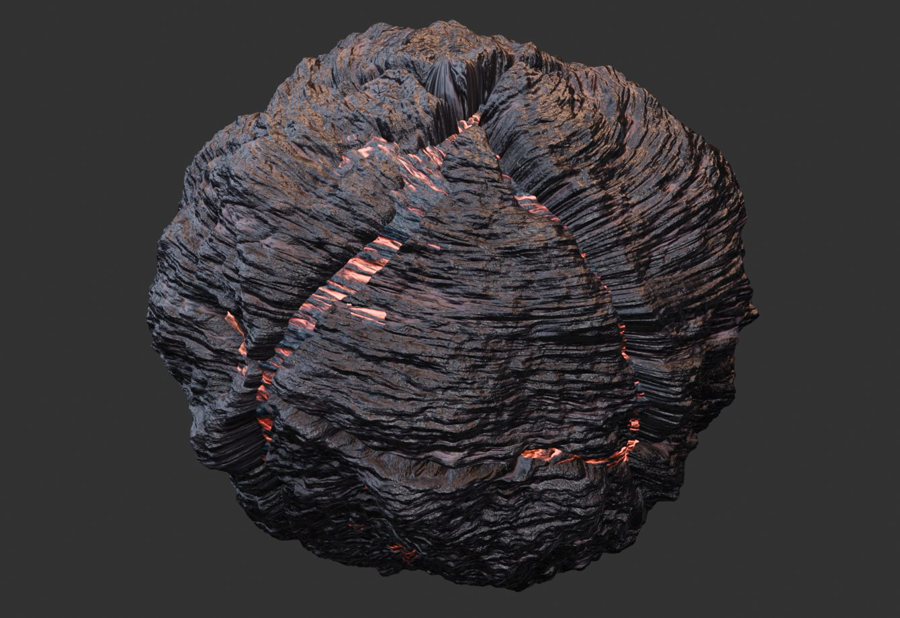
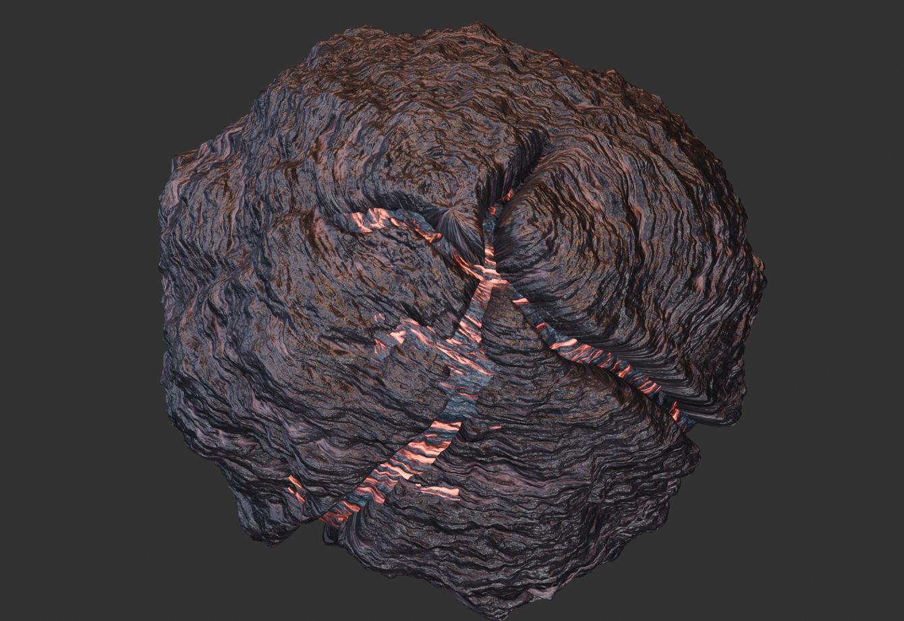
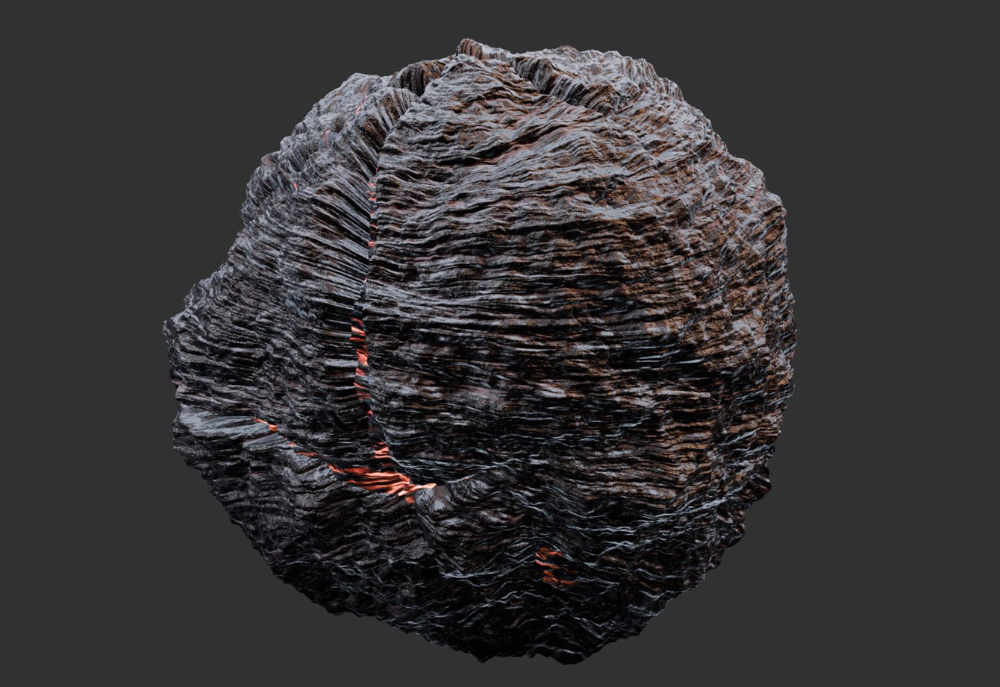

ВЕЗУВИЙ GZ186
Высокодетализированная 3D-скульптура из вулканического базальта с объёмным сердечником и геометрическими раскалёнными трещинами и 18-секундной анимацией «Дыхание недр». Это реальный 3D-ассет из Blender: скульптура вулканической породы с настоящими разломами и отдельным раскалённым сердечником, а не сгенерированный концепт. Вращай, приближай и останавливай реальную 3D-модель.
Загрузка анимированного 3D-меша (32 МБ). Первая загрузка может занять время…

Ракурс 3/4 — скульптура с 4K вулканической фактурой
Реальная геометрия разлома
Неровный боковой силуэтИсточник фотосканированного базальта: ambientCG Lava002 (CC0). Полноразмерный исходник 4K PBR, FBX с коллизией и LOD сохраняются отдельно в проекте gustava. Эта страница — интерактивная художественная проверка, а не подтверждение полного тестирования в Unreal.